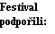
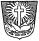
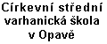
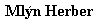
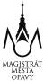

Umělecká agentura MgA. Tomáše Thona pořádá
Chrám sv. Ducha v Opavě 2. – 30. května 2002
Varhaníci OPAVY
Přednes barokních kázání a poezie:
Petr Klimeš - Miluše Janská - Emanuel Křenek
Čtvrtek 2. května v 19:30 hod.
Opava Česká a francouzská barokní a klasická hudba
Čtvrtek 9. května v 19:30 hod. - host festivalu
Velká aula Církevní střední varhanické školy, Beethovenova 1, Opava
Německo J. S. Bach - vrcholné skladby pro cemballo
Čtvrtek 16. května v 19:30 hod.
Opava Jihoněmecká a severoněmecká barokní hudba
Čtvrtek 23. května v 19:30 hod. - host festivalu
Čtvrtek 30. května v 19:30 hod.
Opava Barokní hudba napříč Evropou
Vstupné Kč 80,- (studenti, důchodci Kč 50,-) Permanentka Kč 320,- (studenti, důchodci Kč 200,-)
|  |

|
 |  |  | |||